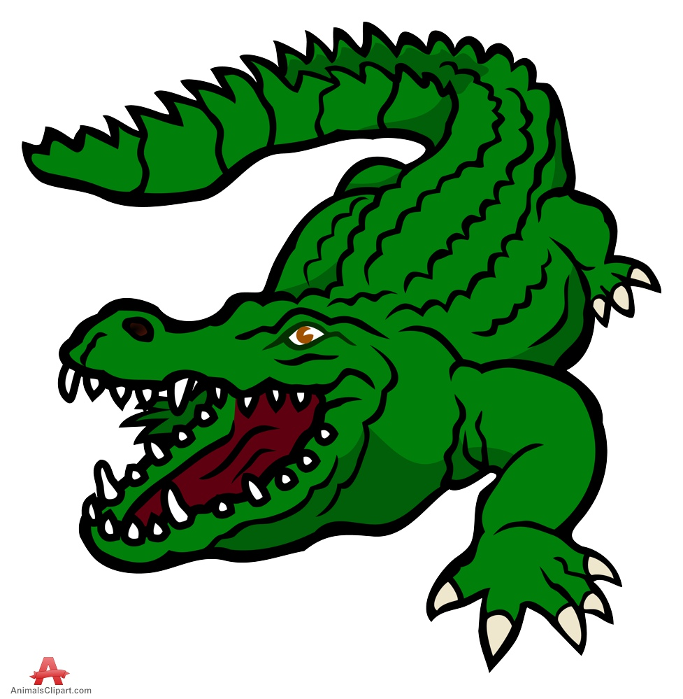
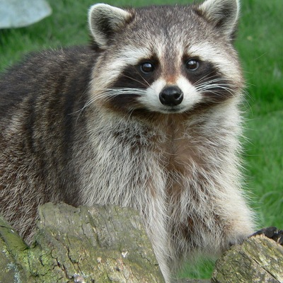

Хороший заголовок - это важно!
Не менее важен хороший, длинный и увлекательный текст внутри заголовка:) Этот вполне себе подходит.
На этой странице можно найти множество хороших текстов, если Вам недостаточно того, который я написала выше.Ниже приведена таблица с некоторыми животными:
| Изображение | Название | Цвет |
|---|---|---|
|  | Крокодил | Зеленый |
 |
Котик | Серый |
|  | Енот | Цвет неясен (предположительно серо-коричневый, но я могу и ошибаться, поэтому лучше уточнить у специалистов, если Вам это вообще нужно, в чем я очень сомневаюсь, ведь эта страничка вообще никому не интересна) |
Хотелось бы заметить, что котики бывают разных цветов:
- Белого
- Черного
- Рыжего
- Цвета краски, в которую он свалился (то есть любого)